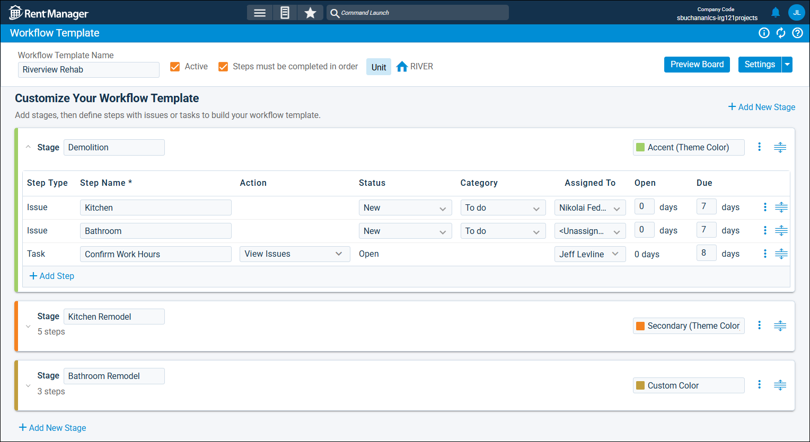

Source: https://rmxhelp.rentmanager.com/Topics/Express/CSH/Workflow-Template-Details.htm
Workflow Template Details (Pop-Up)
Workflow templates in Rent Manager are reusable, pre-configured organizational tools used to create workflow projects. Each workflow template is composed of stages, which are distinct phases of the project. Each stage contains steps (service issues and/or tasks), and as each step is closed, the project progresses toward completion. When a workflow project is created from a template, it inherits these stages and steps, along with any pre-filled information and settings. This reduces setup time and ensures consistency across similar projects. Additionally, workflow templates can be configured to display as workflow boards, which are Kanban-style boards that provide a visual overview of each workflow project generated from specified workflow templates.
The workflow template details page displays general information about the workflow template, as well as an overview of each stage and step within it.
Related Privileges
| Group | Privilege | Column |
|---|---|---|
| Service Manager | Workflow Templates | View, Edit |
For more information, refer to Control User Access.
To view and manage a workflow template's details, go to  arrow_forward Services arrow_forward Workflows arrow_forward Workflow Templates and select a workflow template from the list.
arrow_forward Services arrow_forward Workflows arrow_forward Workflow Templates and select a workflow template from the list.

In the workflow template's settings, if Enable visual board view is selected, you can click Preview Board to view a mock-up of how workflow projects generated from this template display on the Workflow Boards page. For more information, refer to Workflow Boards (Page).
General Information
The page header displays basic information about the workflow template, such as its name, type, and properties it is available for. The following fields are available.
| Field | Description |
|---|---|
|
Active |
When checked, workflow projects can be generated from the workflow template. |
|
Properties |
The Short Name of properties that can be associated with workflow projects generated from this template. |
|
Steps must be completed in order |
Requires the steps and stages in workflow projects generated from this workflow template to be completed in the order displayed on the details page. For example, the first stage of a project must be completed before the second stage can begin, and the first issue in the first stage must be completed before the second issue in that stage can begin. |
|
Workflow Template Name |
The title of the workflow template (e.g., Kitchen and Bath Renovation, Repave Parking Lot, Renovate New Property, Landscaping Overhaul). |
|
Workflow Template Type |
The entity type that the workflow template is associated with (e.g., Property, Tenant, Vendor, etc.). |
Stages and Steps
The stages and steps outline the work that must be done to complete a workflow project generated from the workflow template. You can use  to click and drag them into the correct sequence. Steps can also be moved from one stage to another using this action.
to click and drag them into the correct sequence. Steps can also be moved from one stage to another using this action.
Stages
Stages are distinct phases of a workflow project that issues and tasks are added to. You can collapse or expand each stage by clicking its header. The following fields are available.
| Field | Description |
|---|---|
|
Color |
The identifying Custom Color or Theme Color assigned the stage that distinguishes it from other stages. The select color displays on stages in workflow projects generated from the template and, if Enable visual board view is selected, in the corresponding workflow board's columns. |
|
Name |
The title of the stage that describes the general category of work it involves. |
Steps
Steps are the issues and tasks that must be closed in order to complete a workflow project. The following columns are available.
| Column | Description |
|---|---|
|
Action |
The work required to complete the task. For issues, this column is blank. |
|
Assigned To |
The user responsible for completing the step. |
|
Category |
The classification that best describes the type of issue to be completed. |
|
Due |
The number of days after the Start Date selected when creating a workflow project that the step must be completed. For example, if 3 is entered, and a project's Start Date is 1/1/2026, the step is due on 1/4/2026. Enter 0 to have the step due the same day as the project Start Date. |
|
Open |
The number of days after the Start Date selected when creating a workflow project that the issue becomes available. For example, if 3 is entered, and a project's Start Date is 1/1/2026, the issue is opened on 1/4/2026. Enter 0 to have the issue open the same day as the project Start Date. For tasks, this column always displays 0 days. |
|
Status |
The condition that describes the current progress of the task or issue, such as New or Waiting for Parts. |
|
Step Name |
The unique name that defines the step. This name serves as the Title of the issue or the Subject of the task. |
|
Step Type |
The kind of step—either Issue or Task—to be completed. |
Row Actions
The following row actions are available.
| Action | Description |
|---|---|
|
Copy |
Add a copy of the selected stage or step to the workflow template. |
|
Delete |
Remove the selected stage or step from the workflow template. |
|
Details |
Open the details pop-up for the selected step.For more information, refer to Workflow Task Details (Pop-Up) or Workflow Template Issue Details (Pop-Up). |
Settings
To view the settings configured for the workflow template, click Settings in the page header.
General Settings
The following general options are available.
| Field | Description | ||||||
|---|---|---|---|---|---|---|---|
|
Workflow Template Name |
The name of the new workflow template (e.g., Kitchen Remodeling). |
||||||
|
Description |
A brief explanation of the workflow template's purpose (e.g., Complete all steps in order when remodeling kitchens). |
||||||
|
Workflow Template Type |
The entity type that the workflow template is associated with (e.g., Property, Tenant, Vendor, etc.). |
||||||
|
Properties |
The properties that entities must be associated with in order to be linked to a workflow project generated from this template. If multiple properties are selected, the linked entity must be associated with at least one of the properties. For example, suppose the Workflow Template Type selected is Unit and, in the Properties field, Riverview Apartments is selected. When you create a workflow project from this template, you can only link it to units at Riverview Apartments. Additionally, a user must have access to at least one of the properties to utilize the workflow template. Click Select Properties to select multiple properties at once, or to add them via property group. More Information This field populates only with the properties to which you have access. Your access to properties can be managed from your user account or on the property's details page. For more information, refer to Limit Access to a Property. |
||||||
|
Workflow Project Naming Convention |
The value that automatically populates as the name of workflow projects generated from this workflow template. By default, this field populates with [Name()] followed by the value entered in the Workflow Template Name field once both the name and Workflow Template Type are selected. To customize this field further using scripted values, click Open Script Builder. More Information If Rent Manager scripting fields are inserted, when a workflow project is generated from this template, this field Rent Manager populates information from the entity linked to the project. For example, if the field in the workflow template displays [Name()] Lock Replacement, and a workflow project is generated from this template for the property Riverview Apartments, the name of the workflow project is Riverview Apartments Lock Replacement. For more information, refer to Scripting. |
||||||
|
Enable visual board view |
When enabled, this workflow template becomes available as a board on the Workflow Boards page. Workflow projects generated from the template display on that page. For more information, refer to Workflow Boards (Page). |
||||||
|
Restrict editing on workflow projects with this workflow template |
When enabled, users cannot add or edit stages and steps in workflow projects generated from the template. Use this setting to ensure that only the stages and steps specified in the template are completed on workflow projects. Users with the following privilege can override this setting: Related Privileges
For more information, refer to Control User Access. |
||||||
|
Show workflow projects on entity details. |
When enabled, an overview of workflow projects generated from the template displays in a tile on the linked entity's details page. This allows users to gain insight about active projects linked to any entity they're viewing in Rent Manager. This field displays only if a Workflow Template Type selected. |
Default Issue Values
The default values selected for issues will automatically populate in the issue-type steps of workflow projects generated from the template. The following fields are available.
| Field | Description |
|---|---|
|
Assigned To |
The user responsible for completing the service issue. For example, for a maintenance-related workflow template, you might wish to assign all issues to a service tech manager who will oversee the project. |
|
Category |
The type of service issue (e.g., Property Wide, Maintenance, Electrical, Plumbing, Emergency, Office). For more information, refer to Issue Categories (Page). |
|
Jobs |
The job used to track finances associated with the workflow project. For more information, refer to Jobs (Page). Related Preferences In order to use the job costing tool in Rent Manager, Enable job costing must be checked in system preferences. For more information, refer to General Options (System Preferences). |
|
Priority |
The urgency you assign to the service issues (e.g., Critical, High, Medium, Low). For more information, refer to Issue Priorities (Page). |
|
Status |
The default state of the service issues (e.g., New, Work in Progress, Resolved, Unresolved). For more information, refer to Issue Statuses (Page). |
|
Vendor |
The vendor associated with the work defined in the issue’s Work Order tile. Leave this field as <Unassigned> if multiple vendors are involved or you do not wish to assign a default vendor to new service issues. |
Default Task Values
The default values selected for tasks will automatically populate in the task-type steps of workflow projects generated from the template. The following fields are available.
| Field | Description |
|---|---|
|
Actions |
The action that needs to be taken to complete this task (e.g., Write Letter, Enter an Invoice, Post Utilities). The options that display are from a predetermined list of actions that can be performed in Rent Manager. |
|
Assigned To |
The user responsible for completing the task. |